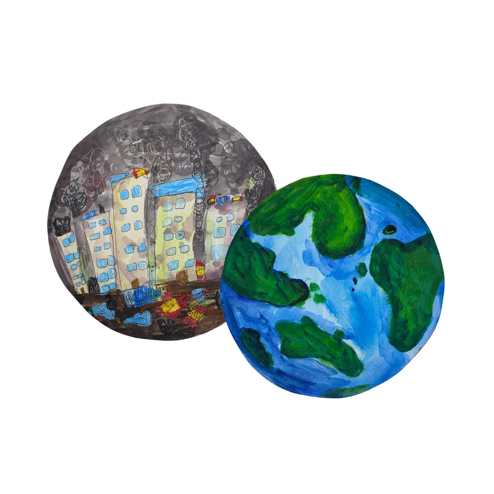
성향별 프로그램
성향 A
아이의 성향에 맞춰 강점을 살리고 표현 방향을 넓혀가는 커리큘럼 예시
아이새움성향미술은 사과 테스트와 성향 분석을 바탕으로 아이에게 맞는 교육 방향을 설정하고, 원장님께는 체계적인 커리큘럼과 운영 시스템을 제공하는 가맹 브랜드입니다.
교육 철학, 커리큘럼, 콘텐츠, 커뮤니티, 운영 지원까지 가맹 원장님이 바로 활용할 수 있는 구조를 제공합니다.
아이의 표현 방식을 관찰하고 교육 방향을 설정합니다.
성향워크북과 월별 콘텐츠로 수업 운영을 지원합니다.
유치부부터 중등부까지 나이별 수업 구성이 가능합니다.
원장님들과 정보와 노하우를 공유하는 운영 시스템을 만듭니다.
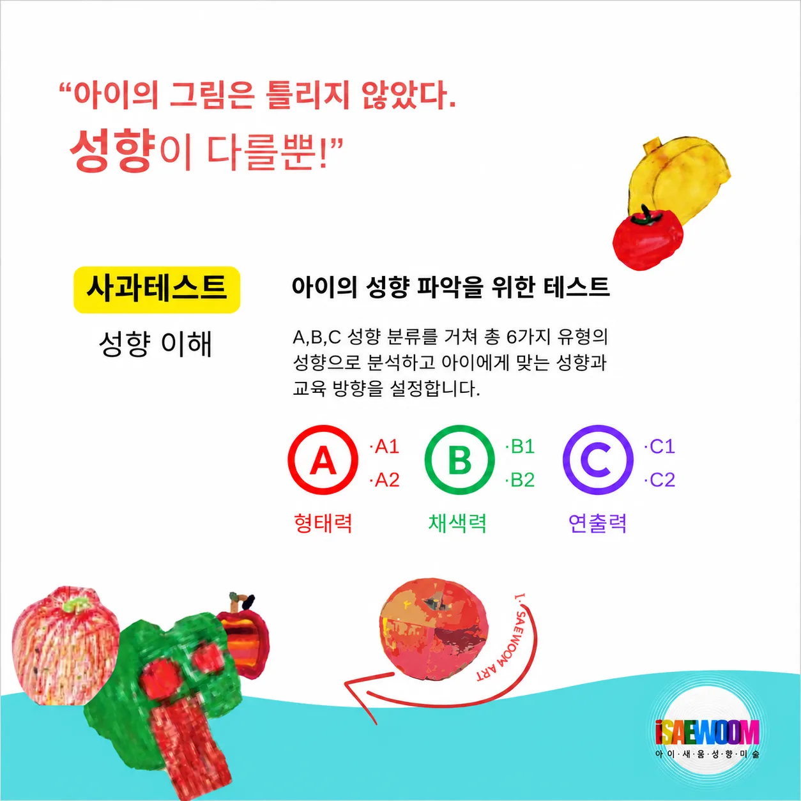
아이새움성향미술은 사과 테스트를 통해 아이가 대상을 바라보고 표현하는 방식을 관찰합니다. 형태력, 채색력, 연출력 등 다양한 표현 요소를 분석하여 아이의 강점과 보완점을 파악하고, 성향에 맞는 교육 방향을 설계합니다.
강점을 살리고 부족한 부분을 보완하며, 아이가 자기만의 표현을 완성해갈 수 있도록 단계적으로 수업을 운영합니다.
성향에 맞는 워크북으로 자신을 이해하고 자기만의 스타일로 흥미를 느낍니다.
강점을 유지하면서 부족한 부분을 자연스럽게 보완하는 수업으로 확장합니다.
균형 잡힌 표현력과 자기주도적 창작 활동으로 성장합니다.
아이새움성향미술은 성향별 워크북과 월별 교육 콘텐츠를 제공하여 원장님이 체계적으로 수업을 준비하고 운영할 수 있도록 돕습니다.
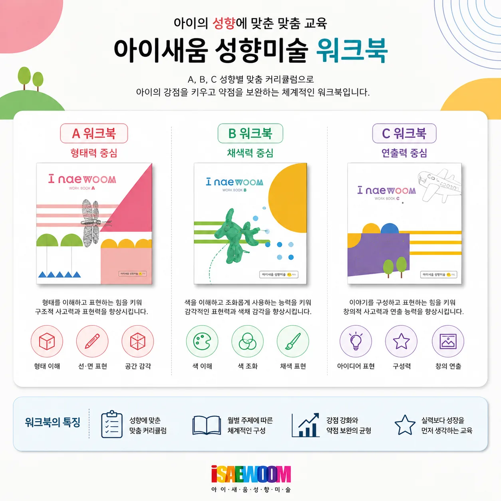
매월 새로운 주제로 구성되는 성향미술 교육 시스템의 커리큘럼 예시입니다. 성향별, 연령별, 주제별 수업을 다양하게 운영할 수 있습니다.

아이의 성향에 맞춰 강점을 살리고 표현 방향을 넓혀가는 커리큘럼 예시
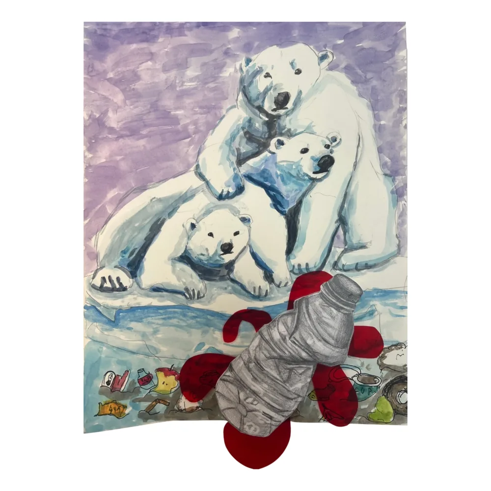
아이의 성향에 맞춰 감각과 표현 방식을 확장하는 커리큘럼 예시
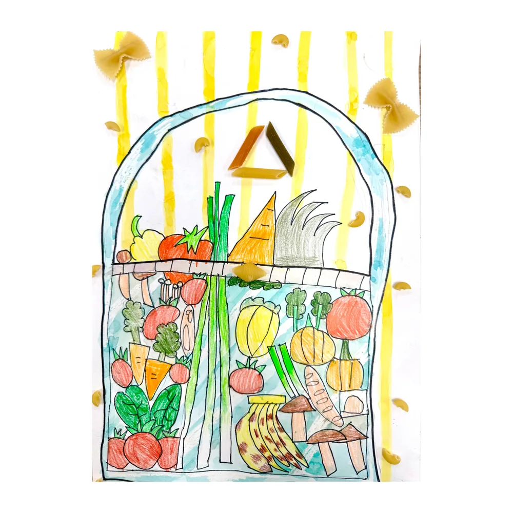
아이의 성향에 맞춰 구성력과 창의적 연출을 키우는 커리큘럼 예시
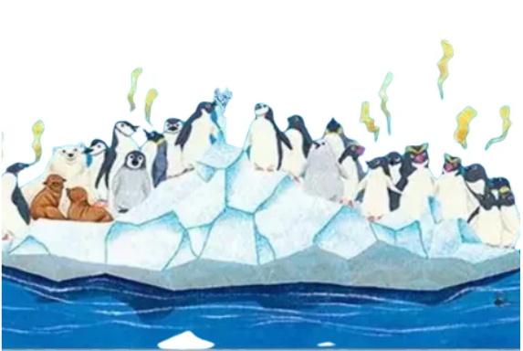
매월 새로운 주제로 구성되는 유치부 커리큘럼 예시
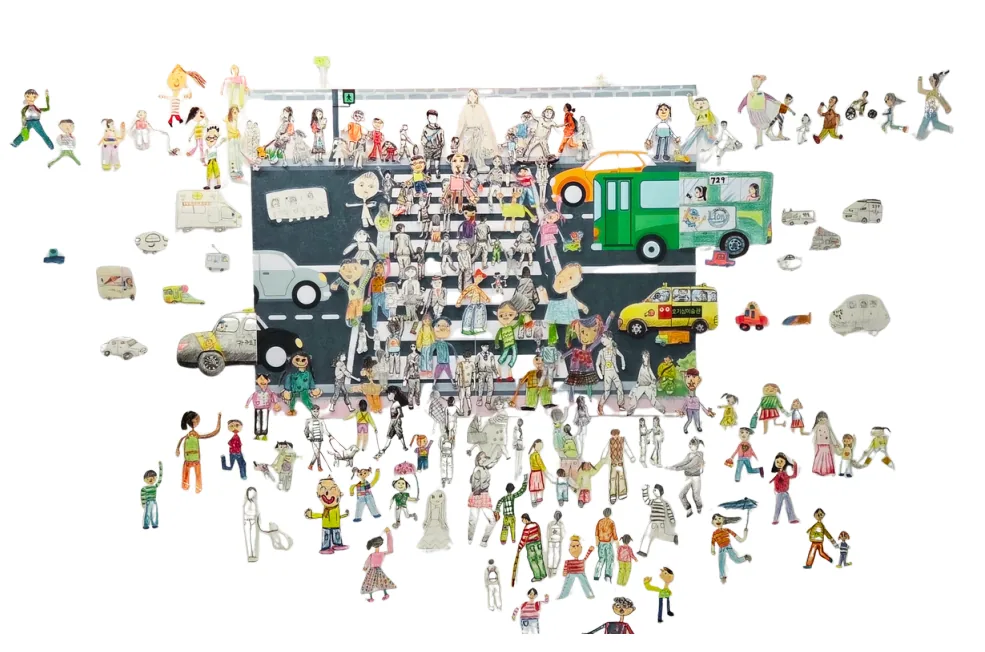
다양한 캐릭터와 이야기를 만들어가는 커리큘럼 예시
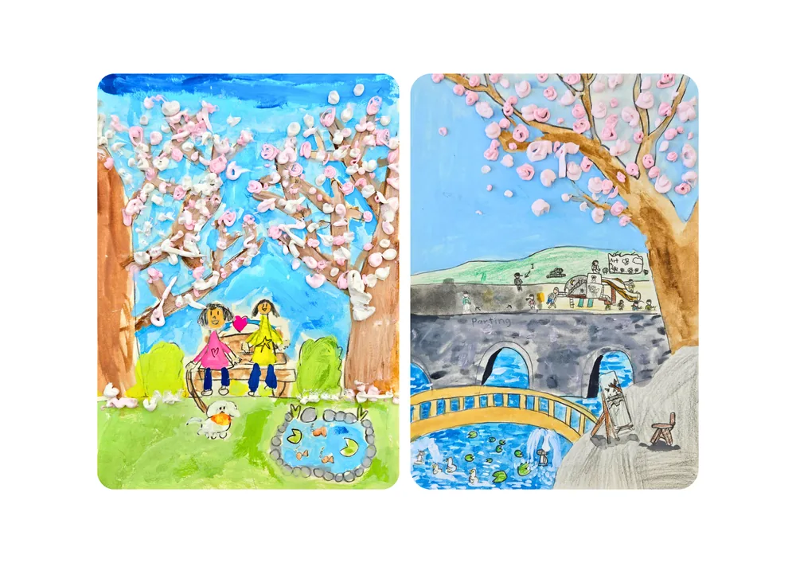
다양한 작가와 명화를 만나며 표현력을 키우는 교육 프로그램 예시
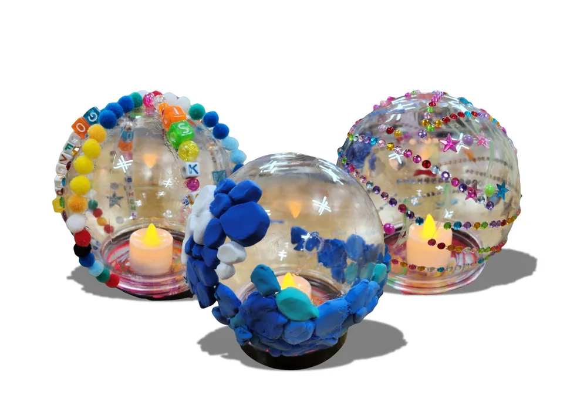
학교 교육과정과 연계된 창의 융합 프로그램 예시
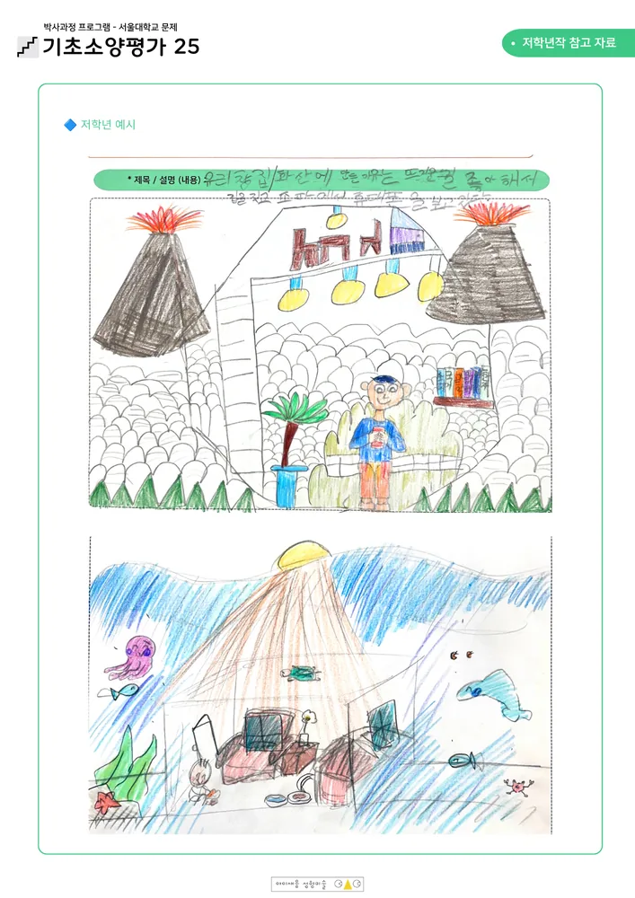
기초 드로잉부터 주제 표현까지 차근차근 키워가는 프로그램
체계적인 교육 시스템과 다양한 지원으로 원장님의 안정적인 학원 운영을 함께합니다.
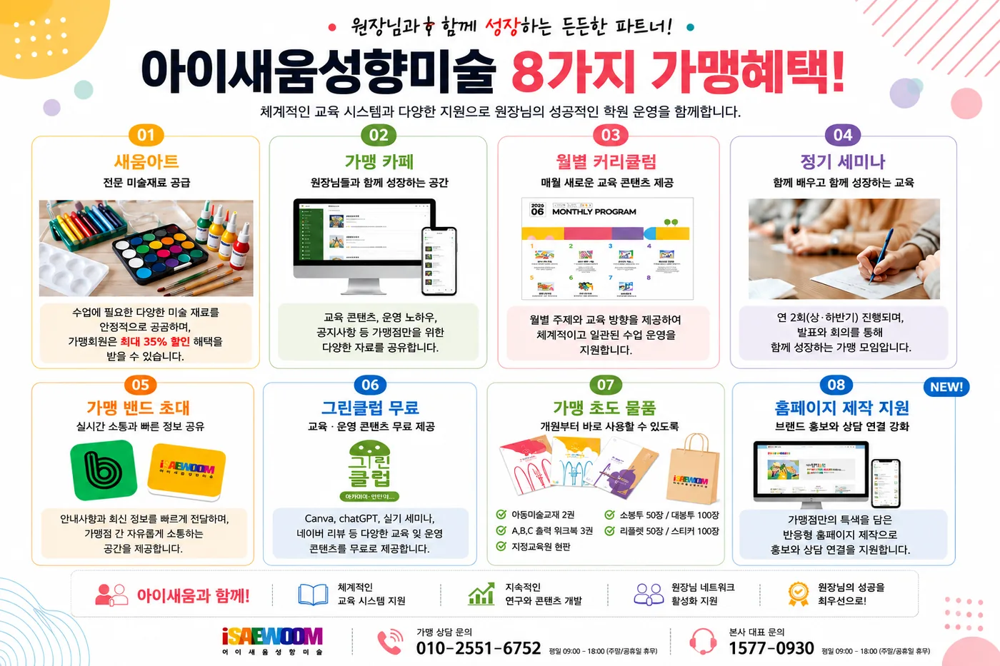
수업에 필요한 미술 재료 공급과 가맹회원 할인 혜택을 제공합니다.
교육 콘텐츠, 운영 노하우, 공지사항 등 전용 자료를 공유합니다.
유치부부터 중등부까지 나이별 커리큘럼과 월별 콘텐츠를 제공합니다.
연 2회 세미나를 통해 교육 연구와 운영 노하우를 공유합니다.
안내사항과 최신 정보를 빠르게 전달하고 가맹점 간 소통을 지원합니다.
Canva, ChatGPT, 실기 세미나, 네이버 리뷰 등 운영 콘텐츠를 제공합니다.
교재, 워크북, 현판, 홍보 리플렛, 스티커, 쇼핑백 등 개원 물품을 지원합니다.
가맹점만의 특색을 담은 반응형 홈페이지 제작으로 홍보와 상담 연결을 지원합니다.
교육 · 커뮤니티 · 운영 지원이 함께하는 가맹 브랜드입니다.
아이새움성향미술은 원장님들이 혼자 운영하는 구조가 아니라, 본사와 가맹점이 교육과 운영 정보를 함께 나누며 성장하는 공동체를 지향합니다.